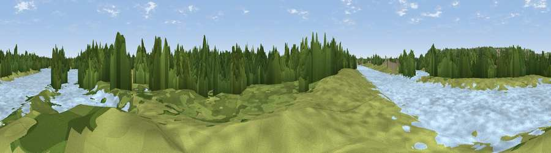

Viewpoint near Holme Pierrepont
#43548 in England · top 94% of its area beats it · near Holme PierrepontThe view, rendered

A 360° render of this exact spot computed from the terrain model, tree cover and land cover — summer colours, afternoon light, calibrated against photographs of famous viewpoints. Real trees, hedges and buildings will differ in detail.
The panorama
Grey silhouette: terrain skyline in each direction (720 bearings, Earth curvature and refraction included). Dashed green: skyline with trees (+15 m) and buildings (+8 m) as obstacles. Blue strip: how far the ground is visible on each bearing.
Where the view opens
Wedge length = distance to the farthest visible ground on that bearing (vegetation-aware). Rings at 10, 25 and 50 km.
What fills the view
36% woodland · 32% water · 20% grassland · 6% cropland · 6% built-up
Angular shares of the visible panorama (visual magnitude), not map area. Landscape diversity 0.60 (0–1 Shannon).
Key numbers
More beautiful places nearby
The staircase of upgrades: each row has a higher view potential than everything closer. Driving times are estimates from straight-line distance, calibrated against real road routing — check an actual route before setting out.
| Place | Direction | Drive | Score |
|---|---|---|---|
| Viewpoint near Colwick | WNW · 2 km | ~5 min | 41.8 |
| Viewpoint near Colwick | WNW · 2 km | ~6 min | 56.3 |
| Viewpoint near Arnold | NNW · 8 km | ~16 min | 64.1 |
| No Man's Lane | W · 16 km | ~29 min | 65.8 |
| Viewpoint near Stathern | ESE · 18 km | ~31 min | 66.3 |
| Viewpoint near Stathern | ESE · 18 km | ~31 min | 67.2 |
| Viewpoint near Belvoir | ESE · 21 km | ~35 min | 68.9 |
| Viewpoint near Belvoir | ESE · 21 km | ~35 min | 70.8 |
52.94795, -1.07851 · source: osm viewpoint · position refined by local search. Computed location — check access rights before visiting.